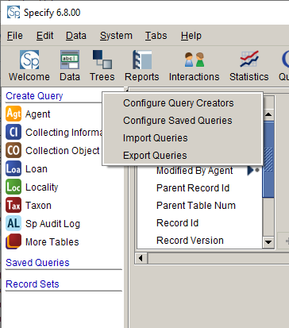
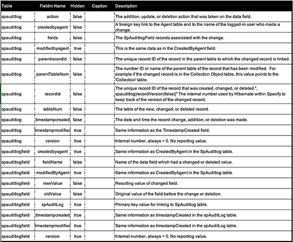
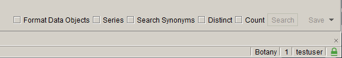

Auditing
Auditing
Auditing
Auditing
Specify version 6.8.00 extends the logging capabilities of the Auditing data table (or "Sp Audit Log") present in each Collection to allow for the capture of value changes at the individual field level. The type of changes, such as insert, edit, and delete, have been captured since the original release of Specify 6.0 but until now it has not been possible to process data in the Audit data table.
The ability to query the Auditing table is available to users at the Admin and Manager level by default, permissions for access can be changed in Security Settings.
Settings for Auditing can be configured in User Preferences.
An Audit log can be created by creating a search in the Query Builder. Open the Query
builder by clicking the  (Query button) on the Taskbar.
(Query button) on the Taskbar.
The Audit table is not available on the Sidebar by default, but must first be added.
1. Right-click next to Create Query found at the top of the Sidebar. A pop-up will appear with choices to configure the Sidebar.

Configure Query Creators
2. Choose Configure Query Creators.
A dialog will open to choose tables to add to the Sidebar. The Sp Audit table will need to be added.

Configure Query Creators
3. Click the  (Add) button for more choices. A new dialog will appear
with a list of tables in Specify.
(Add) button for more choices. A new dialog will appear
with a list of tables in Specify.

Available Queries
4. Select the Sp Audit Log table and click the OK button.
The Audit table will now display on the Sidebar. Click the table to view a list of related data tables and fields available for building the query. For information about building a query see the Query Builder documentation page.
Definitions of the fields in the Auditing tables, and their default Field Name, Caption and status are as follows:

Many of the fields offer record-level ID's in the mySQL database.
Format Data Objects is a new option found on the bottom of the workspace. When this is selected data objects, such as parentRecordID, RecordID, OldValue and NewValue are displayed using their captions and/or formats rather than their numeric id which is used to store them in the database. We include both of these options because, while the caption/format is more recognizable in the query, the numeric id may be useful to queiry directly in MySQL.

Format Data Objects
Choose Format Data Objects to display field captions and field formats in the Query results.
Once the query is configured click the Search button at the bottom of the Workspace. Query results will display in the Workspace.